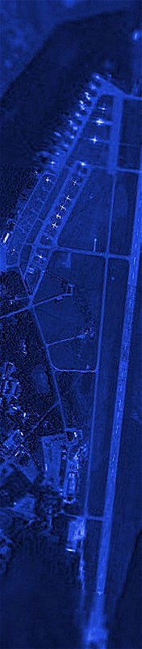

|  |
Survey of Russian Airfields
CIVILIAN AIRFIELDS AND RUSSIAN AND SOVIET AIR BASES
Tim Vasquez
September 2009 edition
The Russian-Soviet airfield database was a project I began in September 2005.
Partly it was to better understand Soviet military posture during the Cold War years.
Many books about that era neglect Air Force order of battle details and focus on personalities and command structures.
In addition to discovering more about the Cold War, I soon realised that this project was also
useful to pilots and to WWII historians.
For a brief time in 2006 I posted the information on a site called russianairfields.com
but due to other time constraints I abandoned it. I then developed a script to upload much
of the content to Wikipedia for others to work on, but only completed this for airfields
from about 58N poleward. So if the Russian airfield content on Wikipedia looks like
it came from me, it probably did.
Effective September 2009 I decided to update my database and re-release it on my own
website. I am also slowly, slowly developing a Chinese
and North Korean airfield database which may be released later.
Complete data on former Soviet Bloc airfields continues to be a difficult problem partly due to the
limited availability of public information, a lingering remnant of the Cold War, and the
language barriers. On the other hand due to growth of Russian language documentation there
is a lot to be learned and I am slowly learning the language.
Online version
This contains most of the Russian Airfield data online on a series of HTML pages.
Excel version (right-click to download)
Commercial use of this database is strictly prohibited without advance written permission.
A description of the complete data is here.
If you have used the database for any hobbyist, military studies, or aviation enthusiast use, please contact me
here and I'll be glad to provide a link to your website or post
about what you have accomplished. This database has been copyrighted and any use for commercial
purposes (for general airport directories, as a resource on major websites, and other revenue-generating
purposes) is not permitted without our express consent.
I do permit the use of this data on Wikipedia if you wish to offload the data somehow to their encyclopedia.
©2005-2010 Tim Vasquez / All rights reserved
|
|